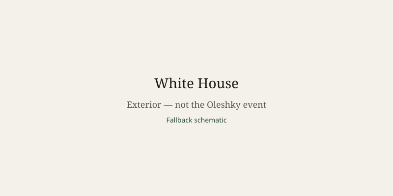

Ukraine · humanitarian · 24 October 2026
The White House said First Lady Melania Trump secured a localized ceasefire in Russian-occupied Oleshky to allow aid and evacuations.

What is agreed across desks
On 23 October 2026 the White House released a statement that First Lady Melania Trump had secured a localized ceasefire between Russia and Ukraine in the city of Oleshky. The statement said both sides agreed to halt military action in the city so that humanitarian aid could enter and civilians could evacuate through a designated passageway. The White House said the ceasefire would begin on 29 October. Ukrainian officials, including negotiator Dmytro Lubinets, said the halt would start on 27 October. Russian sources indicated that timing was still being coordinated. BBC, Reuters, AP, Al Jazeera, Kyiv Post, and CBC all reported the White House claim, the population figures, and the dual dates.
Oleshky lies in Kherson oblast, across the Dnipro River from the city of Kherson. It has been under Russian occupation since early 2022. The White House stated that the pre-war population was approximately 24,000 and that 1,700 to 2,000 people remain, mostly elderly, along with about 50 children. It said roughly 90 percent of the city was flooded after the destruction of the Kakhovka Dam. Residents are described as lacking reliable electricity, medicine, food, and clean water and as living amid mined roads.
The first lady’s statement said she initiated the discussions after learning of conditions during the United Nations General Assembly and that she and a representative worked directly with Russian and Ukrainian leadership. Ukrainian officials credited both Melania Trump and Pope Leo with involvement in the process. Both sides said the arrangement is temporary and limited to the city and necessary corridors.
What is only a quote
The assertion that the ceasefire would have been “impossible” without the first lady’s intervention is her characterization. Confirmation that forces will in fact cease fire on a specific hour, that aid will physically cross, and that residents will be transported is not yet available; it depends on implementation after the announced start date. Claims that the deal signals a broader end to the war are extrapolations. The precise role of any papal intermediary is reported by Ukrainian officials but is not independently documented in the White House release.
Mechanism a reader needs
Localized humanitarian pauses have been used in other conflicts to extract civilians or deliver supplies when larger ceasefires remain unreachable. They require agreement on the geographic boundary, the start and end times, the routes that will be demilitarized, and the parties who will escort or monitor movement. In this case the parties have announced an intention but have not yet published the detailed technical protocol. The difference between a 27 October and a 29 October start date is material for planners on the ground; it is the sort of discrepancy that later reporting can resolve once the corridor either operates or does not.
Oleshky’s isolation after the dam collapse and the continued presence of mainly elderly residents explain why a short, narrow pause can still matter. Elderly people who cannot walk long distances, and children who remain, are the population the announced corridor is designed to reach. Whether the pause holds for the duration needed to complete those movements will be observable in the days after the announced start.
The first lady has previously been associated with efforts to return Ukrainian children taken to Russia. That earlier channel is cited by the White House as the communication path used for this arrangement. A humanitarian corridor is not a peace agreement; it does not alter territorial control or the broader military situation along the front.
What this story is not
It is not confirmation that the ceasefire has already begun. It is not a photograph of Oleshky or of any resident. The image above is a stock exterior of the White House. It is not a claim that the war itself has ended or that larger negotiations have concluded.

Source articles and scores
Images: Wikimedia Commons type photograph of White House south facade linked via Special:FilePath. Caption states it is not the event. onerror falls back to committed SVG. No CORS attribute.